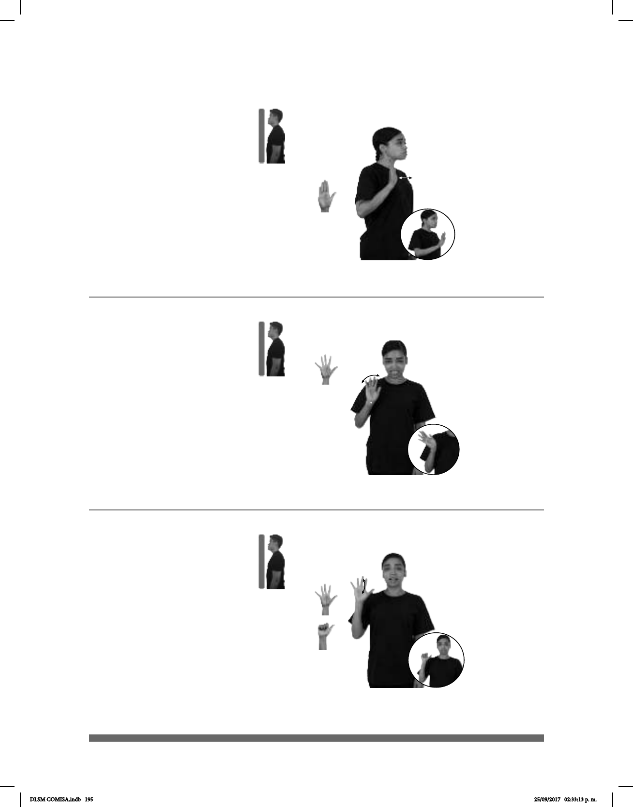

195
Seña: SM
B-P.2
Palma hacia afuera.
A la altura del hombro.
Recto hacia enfrente
repetidamente.
v. tr. Señalar a alguien
atribuyéndole la culpa de una falta,
de un delito o de un hecho
reprobable. Denunciar, delatar.
Acusar (vas a ver) (5-G 7)
YA pro-TÚ ACUSAR
Ya te acusé, vas a ver.
Seña: SM
5.1
Palma hacia afuera.
A la altura del hombro.
La mano se agita.
interj. Despedida al
término de una conversación.
(5-G 8)
_________________________neg___
AYER ADIÓS pro-TÚ DECIR NADA
Ayer no me dijiste adiós.
Seña: SM
Seña que pasa de
5.1 a A.1
Palma hacia afuera.
A la altura del hombro.
El pulgar se
mantiene inmóvil mientras los otros
cuatro dedos se cierran contra la
palma repetidamente.
interj. Despedida al
término de una conversación.
(5-G 9)
_________________________neg___
AYER ADIÓS pro-TÚ DECIR NADA
Ayer no me dijiste adiós.
DLSM COMISA.indb 195 25/09/2017 02:33:13 p. m.